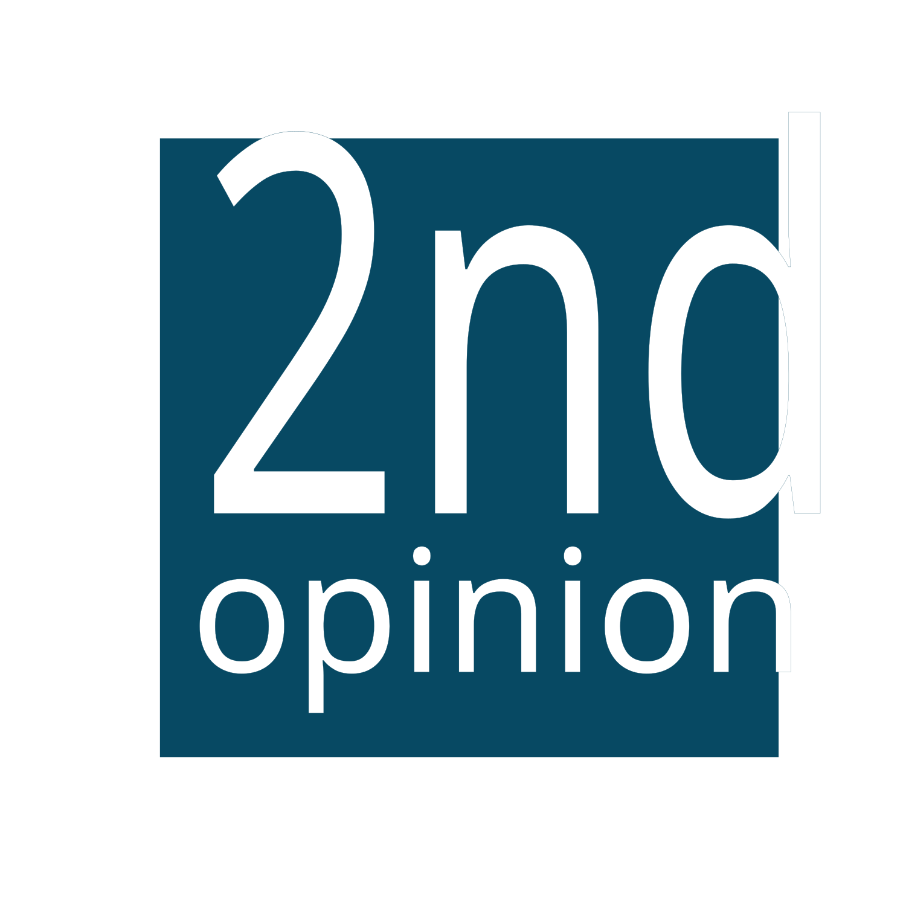

Real Flights – Human Factors – Safer Skies
Cognition & Acuity Assessment
A quick mental snapshot before you go fly: reaction speed, color–word control, and 2-back working memory.
FRAT Assessment
FAA-style True/False risk items with weighted scores and a VFR/IFR risk-band matrix.
Flight profile
Select flight rules and your experience in this aircraft / avionics type.
Flight rules
Experience in type
These bands mirror one published FAA FRAT example. Your SOP or CFI may use different thresholds.
Risk bands (reference)
After scoring, your total is placed into one of these bands. High scores are a cue to slow down and think hard about mitigation, alternatives, or delay.
IFR
<100 in type: Low 20–25, Moderate 25–30, High >30
≥100 in type: Low 25–30, Moderate 30–35, High >35
≥100 in type: Low 25–30, Moderate 30–35, High >35
VFR
<100 in type: Low 5–15, Moderate 15–20, High >20
≥100 in type: Low 15–20, Moderate 20–25, High >25
≥100 in type: Low 15–20, Moderate 20–25, High >25
All questions are True/False. “True” applies the score shown; “False” contributes zero. Questions shown update based on VFR vs IFR.